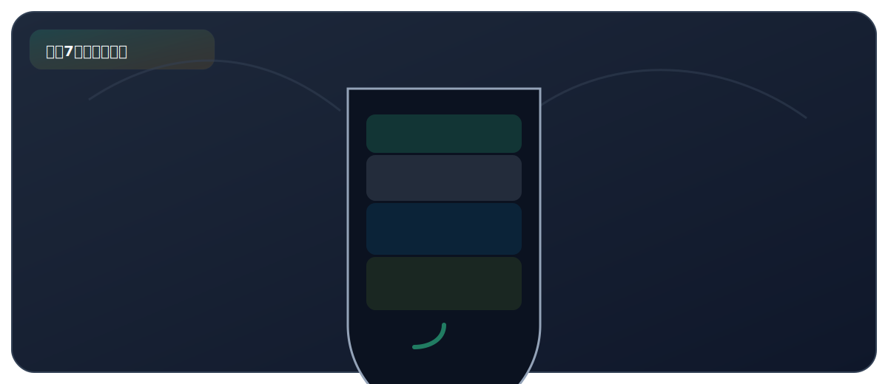

实验七、自制简易净水器

来自 PDF《化学实验基础知识及课本实验总结》的整理。建议：先读"实验原理"，再背"操作顺序"，最后用"误差分析/注意事项"拿分。
实验目标
- 理解简易净水器的各层作用：过滤 + 吸附（活性炭）。
核心原理
- 过滤除去不溶性杂质（泥沙等）；活性炭利用吸附性除去色素和异味。
关键步骤（怎么做）
- 饮料瓶倒置，从下到上依次放：纱布/棉花、活性炭、细沙、粗沙（或小石子）。
- 将浑浊水从上端倒入，收集下端流出水。
现象（看到什么）
- 浑浊的水经净水器后变为较澄清、无异味的水。
高频考点（怎么拿分）
- 细沙/粗沙/棉花/纱布：过滤作用（除去不溶性杂质）。
- 活性炭：吸附作用（脱色、除味），利用的是活性炭的吸附性（物理变化）。
- 净水器得到的水仍含可溶性杂质，不是纯水，仍需“煮沸消毒”才能饮用。
- 净水程度排序：沉淀 < 过滤 < 吸附 < 蒸馏。蒸馏得到的水是纯净物。
PDF摘录（原文提取，供对照）
要点
- 小卵石和石英砂、膨松棉的作用：过滤。
- 活性炭的主要作用：吸附色素和异味。
- 说明：使用一段时间后，部分物质吸附杂质已达饱和，清洗 后可以继续使用的是纱布、石英砂和小卵石，需要更换的是 活性炭和蓬松棉。